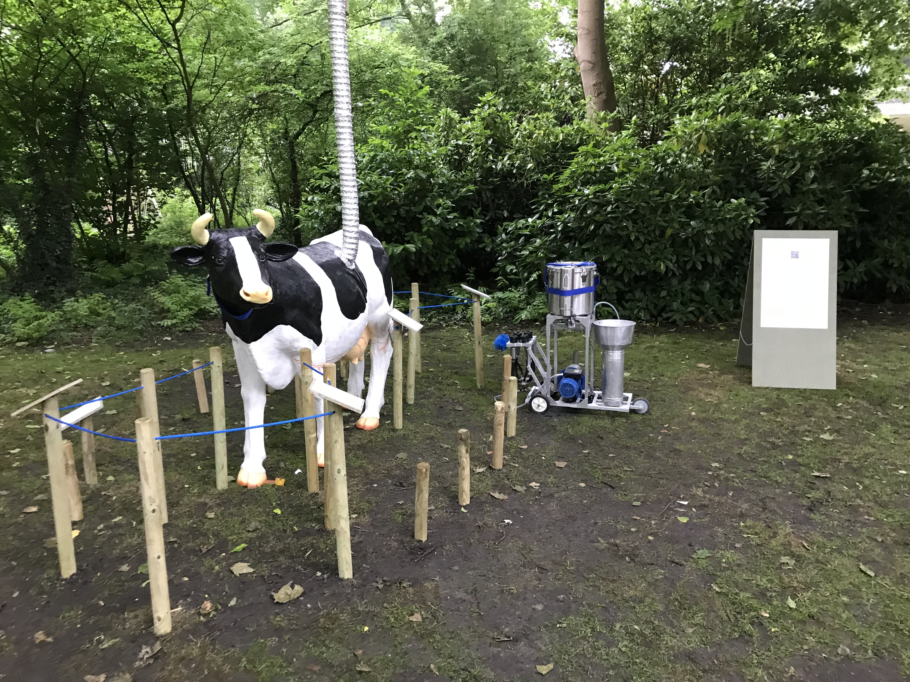
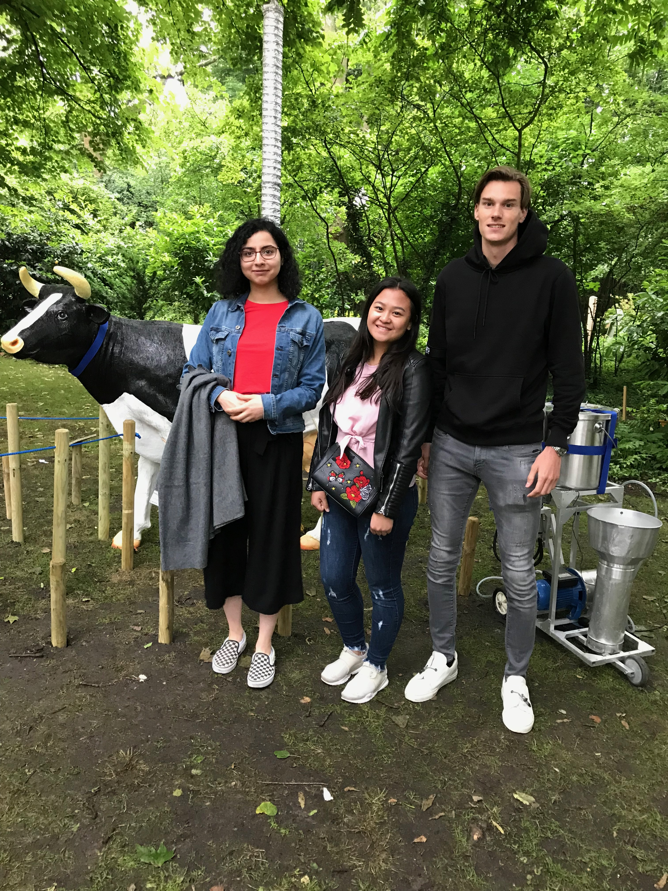
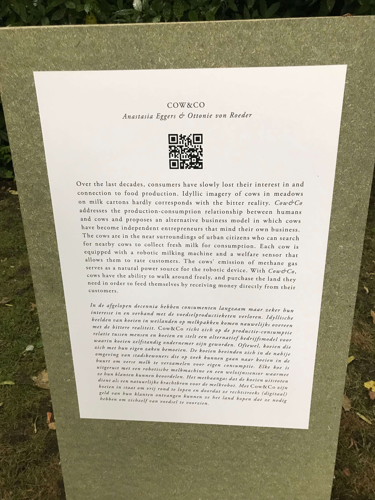
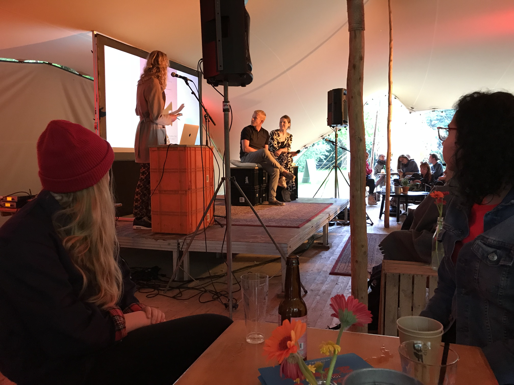
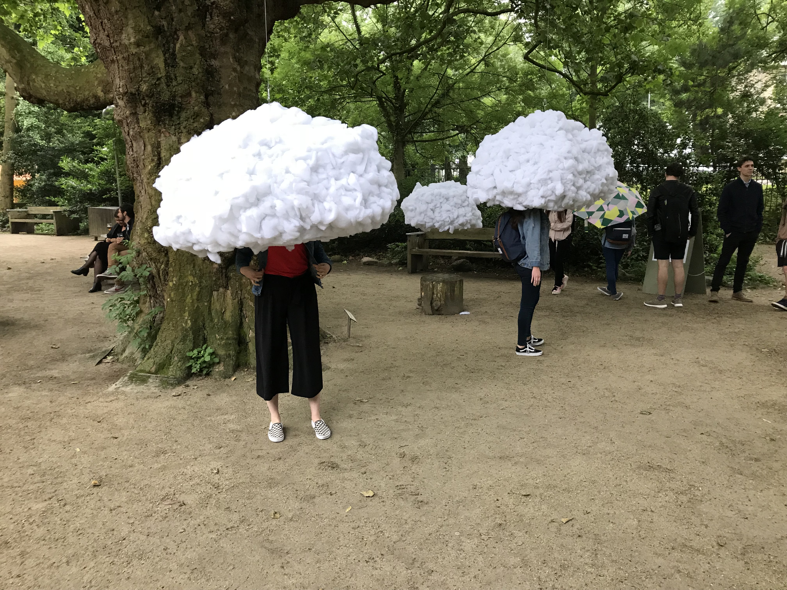
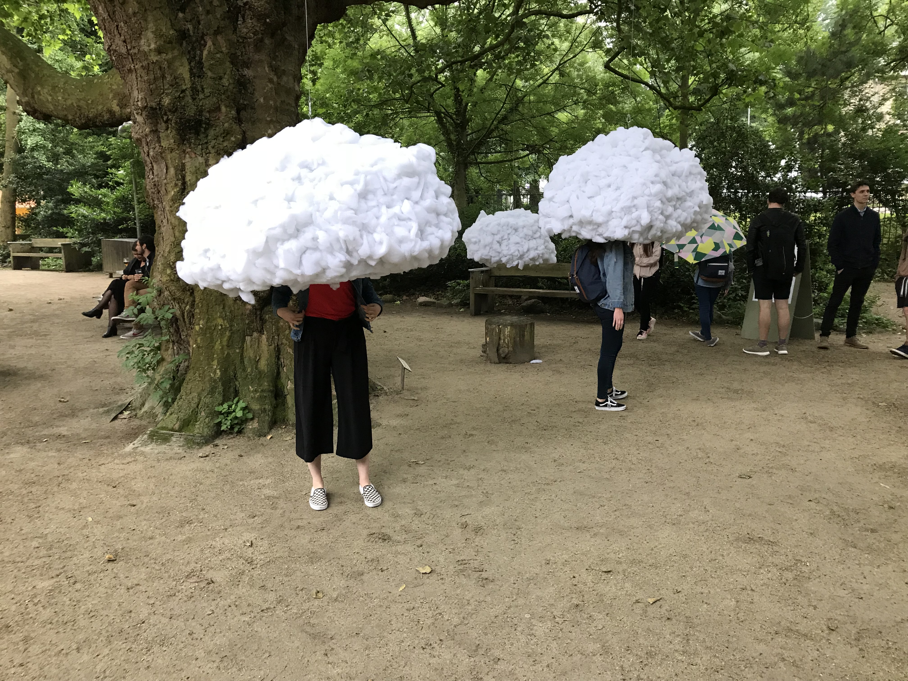

Excursion
COW&CO - Anastasia Eggers & Ottonie von Roeder
  Wat is het?
Cow&Co is een product dat zich richt op productie – consumptie relatie tussen mensen en koeien. Het bestaat uit een alternatief bedrijfsmodel waarin koeien zelfstandig ondernemers zijn geworden. De bedoeling is dat er in verschillende steden koeien komen te staan, zodat mensen melk kunnen verzamelen voor eigen consumptie. Deze koeien zijn allemaal voorzien van een eigen robotische melkmachine en een welzijnssensor waarmee ze hun klanten kunnen beoordelen. Ook stoten de koeien een methaangas uit. Dit geldt als een natuurlijke krachtbron voor de melkrobot. Koeien kunnen met Cow&Co weer vrij rondlopen en doordat ze rechtstreeks digitaal geld van de klanten ontvangen hebben ze de mogelijkheid om het land te kopen. Hierdoor kunnen koeien zichzelf van genoeg voedsel voorzien en een eigen locatie uitzoeken om te grazen. De bedoeling is dat je op een smartphone kijkt waar er koeien staan. Deze worden in de app aangegeven met een blauw koe icoontje. Vervolgens rij je hiernaartoe en melk je de koe. In het filmpje wat hieronder staat kun je heel duidelijk zien wat de bedoeling is. Dit heb ik hierboven ook een beetje geprobeerd uit te leggen. Hetgeen wat mij erg aanspreekt van dit project is: dat doe koe eigenlijk een soort zelfstandig ondernemer wordt. Dit zorgt en voor meer geld voor de koeien die niet 2 of soms 3 verschillende tussenpersonen hebben. Voordat het überhaupt in de winkel komt te liggen. Ook kunnen de koeien verspreid over veel meer verschillende locaties in steden staan en grazen. Er is in Nederlands nog zoveel land waar koeien gras kunnen eten en tegelijkertijd gemolken kunnen worden door een robotische melker. Ik heb zelf niet heel erg veel met koeien en ik drink ook niet graag melk. Maar ik denk zeker dat dit zou kunnen werken. Ook bijvoorbeeld voor ouderen mensen die door het zoeken en melken van een koe toch elke dag een uitje zouden kunnen hebben.
Meer projecten en foto's van de excursion
 

Reflectie
Ondanks dat de excursie laat op de dag was en in Amsterdam met regen. Was het toch een leerzame soort expo achtig. Er waren verschillende kunstwerken te zien die allemaal een bepaalde functie hadden. Zoals je hierboven kunt zien heb ik er een van de velen uitgewerkt en meer over opgezocht. Dat is het eerste leerpunt van de excursie. Ook was er een presentatie en werd er gesproken over hoe bepaalde dingen tot stand gekomen zijn. Dit was interessant, maar af en toe wel een beetje langdradig. Van de hele excursie vond ik alle tentoongestelde objecten erg spectaculair en met een uitgebreid verhaaltje kreeg ik er ook echt een beeld bij. Het was jammer dat het regende en dat alles buiten stond, waardoor je minder lang bij een project bleef staan. Maar ik heb erg leuke dingen gezien die dag.